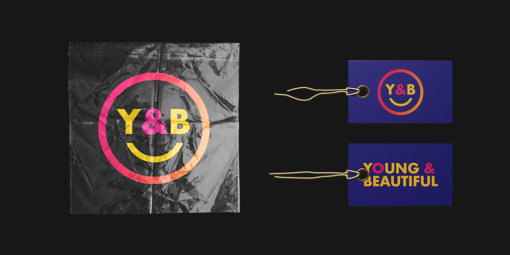
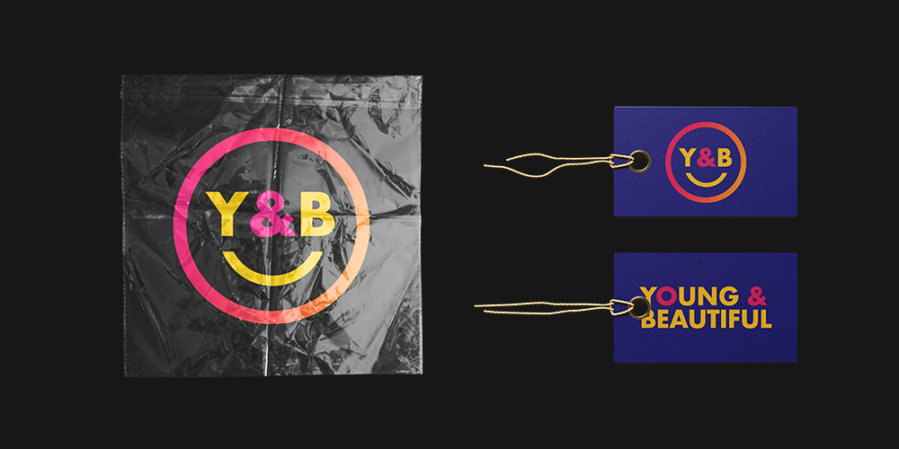

Spring 2019
Personal project (because why not ü§ì)
When they’re not being serenaded by Lana del Rey, Young and Beautiful are a team of European esports players competing in Overwatch's Contenders division. Established in 2018, they’ve proven themselves to be one of the biggest incubators for European talent — a remarkably high proportion of its alumni have been signed by League organizations, and members are often chosen to represent their home countries in the annual World Cup.

The existing Young and Beautiful logo is distinctive due to its color palette and shape. It comprises four colors broadly across the rainbow spectrum as a gradient map over an image of flowers, with a fairly striking thick magenta outline for the flower motif and smile. There’s also bold sans-serif text (Arial Black) for the logotype, which omits a written “and” to avoid overloading the overall design.

I wanted to simplify the design to its essential components and then rebuild for a different look. I started by brainstorming a non-complex, circle-like shape to maintain the core logo structure, and looking for a way to incorporate the actual team name into the design to avoid potentially awkward trade-offs between text and form.
I looked at shortening the team name in strong sans-serif fonts to emulate the original Arial Black text. As there was no actual "and" involved in the original, I used an ampersand as a substitute to minimize the space of the logotype and ensure that the text would still be legible in conjunction with the finished shape.
I also played around with a few different typefaces, but the ones that yielded the best results were Lato Bold and Futura Bold. I decided to move forward with Futura, since I felt that its irregular letter bowls gave it a less “standard”-looking appeal which fit better with the general aesthetic of the team.
The original palette also suffers in terms of visual clutter. There are five very bright and vibrant colors to process, and can be somewhat distracting when looking at other aspects of the logo. To work around this and create a more “mature” version of the design, I modulated the original colors and simplified them to three key colors: maintaining the original orange, but adding a more muted magenta and a darker navy.
After going a bit wild with some alternative concepts, I ended up going along with one of the ideas that I had early on. Although I wasn’t able to fit in the same arc shape as the original since its radius was far shorter, the smiley face remains in the new design (with the aid of the convenient two-part abbreviation of the team name).
 
